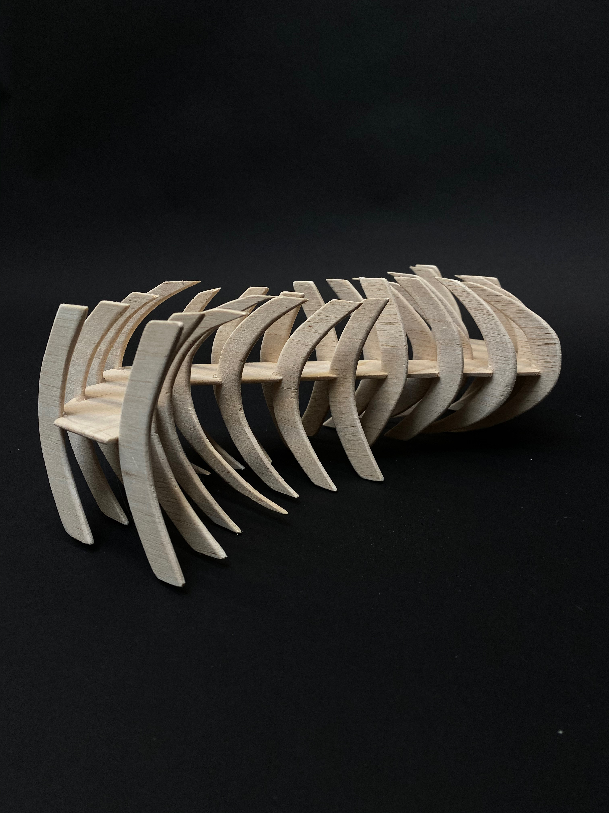

While studying in Italy I was able to take a furniture design course. I made this table in four days, using only glue and pegs. The limitations of the project and material available challenged me to create a more simple design, but it was much more intentional and was successful under the circumstances.
** It was the professor of this course, Tim Miller, that first described my work as having “Wonk with Precision”, which I quite liked the sound of and have clung onto since. You will observe a reference to that on the home page**

This balsa wood sculpture is entitled “Abstraction of Meditative Breathing”. It is inspired by the motion of two individuals breathing in and out inversely, with their chest cavities rising and falling to fit one another.
